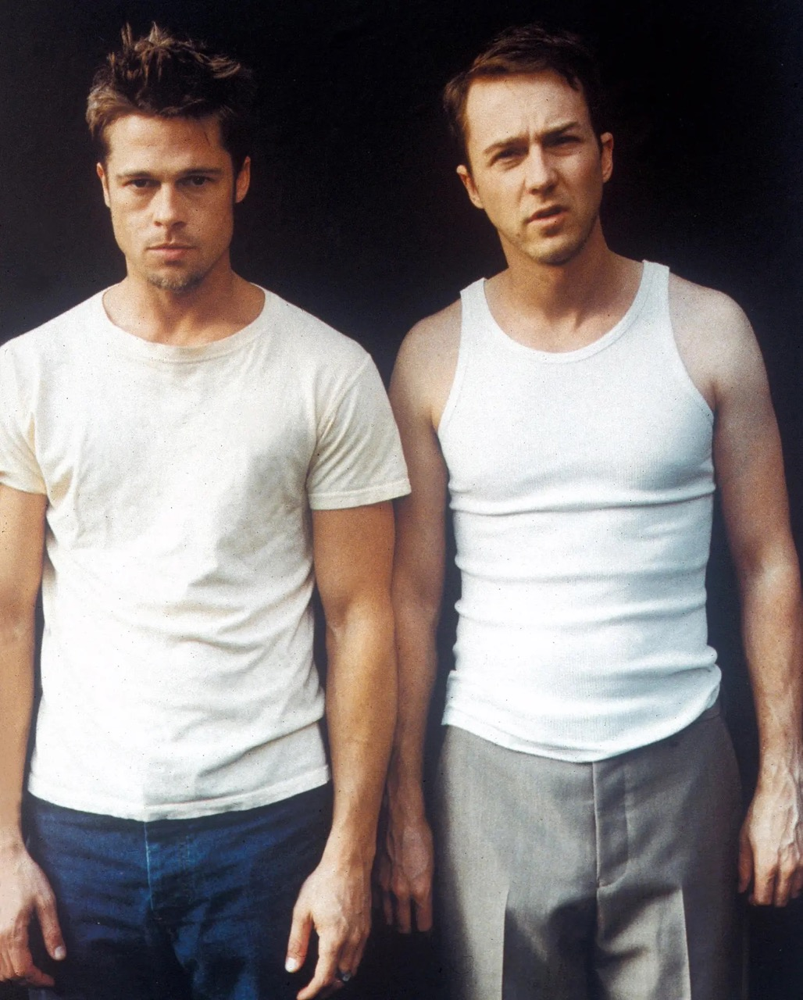

Ever heard of Fight Club? Well, forget everything you think you know about it because the first rule of Fight Club is that you'll be talking about it non-stop! David Fincher's mind-bending masterpiece is a cinematic punch to the gut that leaves you breathless, bewildered, and begging for more.
Brad Pitt and Edward Norton give career-defining performances as two sides of the same unhinged coin. Pitt's Tyler Durden is the anarchist we secretly wish we could be, and Norton's narrator is the buttoned-up everyman we've all been at some point. Together, they form the most dysfunctional bromance in cinematic history, and it's gloriously messed up.

Fight Club is like Fight Club itself: you can't fully appreciate it until you've experienced it. It's a cinematic rollercoaster that'll make you question your sanity and the society you live in. Chuck Palahniuk's mind-bending source material is brought to life with Fincher's stylish direction, which serves as the perfect vessel for this chaotic tale.
The script is peppered with nihilistic nuggets of wisdom, and the film's social commentary is as relevant today as it was in 1999. Consumerism, identity crisis, and rebellion against the system have never been portrayed so poignantly.
And who can forget that twist? Fight Club delivers a knockout punch of a plot twist that will leave your jaw on the floor. It's the kind of twist that you'll be discussing over and over at your own underground meetings.
So, in the end, Fight Club isn't just a movie; it's a cultural phenomenon. It's a call to arms for the disenchanted, a wake-up call for the complacent, and a cinematic gem for those who appreciate their movies with a side of anarchy. Just remember, the second rule of Fight Club is... well, you'll have to watch to find out.